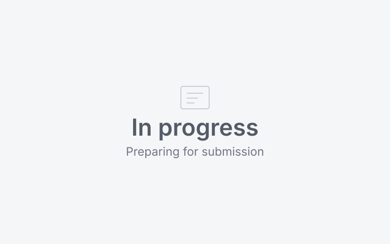

Project list
| 01 Work | Product planning and operations for services at JEEKIM COMPANY. I handled planning, rules and verification; the dev team built them. |
|---|---|
| 02 SKALA | Exercises and assignments from SKALA, an AI service development bootcamp (in progress). Solo work and team assignments are marked separately. |
| 03 Team | Side projects and a competition. I keep the team's result separate from my role. |
| 04 Personal | Web apps and tools I made for my own use. I built them with AI coding tools and checked them on screen myself. |
Work — JEEKIM COMPANY
At
01 · Work · Planning · Verification
Order and box status sync with a pharmaceutical wholesaler’s ordering platform
The service collects pharmacies' paper prescriptions, scans them and stores them. Orders come in from an external pharmaceutical wholesaler’s ordering platform.
The problem
The operations staff were downloading mall orders as Excel files and typing them into the admin by hand. The mall tracks orders and order items, while our operations track boxes. So when only some boxes were picked up, or a pickup was postponed, it was hard to keep status and shipping details in sync on both sides.
My role
I reviewed the mall's API spec and planned the mapping and status rules. After development, I asked the dev team to run the API calls, cross-checked the results, and logged issues in QA. The dev team built it, and the external API format was set by the mall.
Rules I set
- Identify each item to process by order number plus item sequence number (the line-item number within the order), and link it to an internal box on that basis
- Treat partial pickup and postponed pickup as separate statuses, and map partial pickup to the mall's existing "partially shipped" status
- Improve the admin search so staff can look up an order directly by the mall's order number
Example — one order, two boxes, partial pickup
| Mall (per order) | Internal (per box) | Box status | Sent to mall |
|---|---|---|---|
| Order A · item 1 | Box A-1 | Picked up | Partially shipped |
| Order A · item 2 | Box A-2 | Pickup postponed |
An order number alone can't show a different status for each box. So the first thing I settled was the rule: identify items by order number + item sequence number and link them to boxes. The item sequence number is the line-item number inside the mall's order, not a new number we assigned to boxes. Orders where only some boxes were picked up are sent to the mall as its existing "partially shipped" status, and only the picked-up items go into settlement.
Verification
I compared the API call results against the screens on both sides and found two bugs, which I passed to the dev team.
- Orders that fell on the boundary of the call time window were missed
- For orders with several boxes, shipping details were applied only to the first box
Result
The staff member's manual entry for this task dropped from about 1 hour a day to 10 minutes. Partial pickups were now reflected in settlement, and questions about mismatched statuses went down (based on my own checks).
- API spec review
- Status rules
- Data cross-checks
- QA
02 · Work · Service planning
Planning a payslip service
The problem
The bookkeeping staff didn't use the existing payslip feature because its calculations were wrong. Each pharmacy reported pay differently (hourly or monthly, before or after tax), so staff filled in payslips by adjusting the inputs until the after-tax amount matched. When someone new took over, the basis for the numbers wasn't recorded anywhere, which made handovers hard.
Learning the work
To plan the solution, I did the bookkeeping for about 30 clients myself and wrote down the payroll and deduction rules and their exceptions.
My role and the standards I set
- Set two standards: calculation results must match the tax software (WEHAGO), and the flow must follow the actual filing process
- Built scenarios for each pay type and checked the formulas against WEHAGO's results
- Moved the Excel calculation logic into reference code in Google Apps Script and handed it to the dev team
- Planned the rules, data fields, user flow and screens, and took part in dev testing
Result
Even after release, staff kept the old method because they worried the numbers might be wrong. After I explained the calculation standards in a meeting and shared a usage guide, the team started using it for real payroll calculations, and I confirmed it reached a pilot with customers. It also cut down the work of staff downloading social insurance notice statements by hand.
Current status
I left the company while it was in the customer pilot stage.
- Defining calculation standards
- Checking against WEHAGO
- Apps Script
- Adoption by staff
03 · Work · AI service policy
AI tax consultation for pharmacies — with Samil PwC
An AI consultation service where pharmacy owners ask about tax, labor and administrative matters.
When the tuning schedule and data were uncertain
We expected that building on an existing model would let us roll it out quickly, but the partner said tuning would take more than a month. Internally, it was also hard to judge which data would work and in what form to provide it.
- Data to check first — I agreed with the partner to start with the FAQ, which we could prepare right away, use it through RAG to check the answer flow, and tune only if needed.
- Data to hold for later — Recorded consultation audio needed time to collect, clean and sort into cases, so I proposed using it in a later improvement phase, after checking the first version. This stayed a proposal; I couldn't confirm whether it was actually used.
Rules I set and how I checked them
- Answer order: look for an answer in the FAQ first, and fall back to the existing generation method if there's no good match
- Split the cases where the service can't answer into three, each with a next step: if no answer is found, connect to an expert consultation; if the question is outside pharmacy operations, explain what the service covers; if there's a system error, prompt a retry and log the error
- Rules for showing the source legal provisions, a notice that answers are AI-generated, retention rules for chat history and bookmarks, and a requirement to cap token usage
- Organized and supplied materials such as past pharmacy tax consultation records and pharmacy operations manuals, and reviewed the Q&A
What I confirmed in beta
In beta testing, I saw for myself that some FAQ questions were answered within 10 seconds. This is what I observed for some questions, not an overall average. I left during the beta stage, so I couldn't confirm results in full operation.
In this project, my part ended at setting the answer-scope rules and handing them to the partner. I later checked how such rules hold up in code by building them myself in a personal project, TaxDesk.
- AI service policy
- Edge cases
- External collaboration
- Screen design
04 · Work · Integration flow planning
Pharmacy Ledger: account connection flow and partner site integration
The problem
While doing remote support, I saw how inconvenient it was for pharmacies to connect Hometax, the card sales service (Credit Finance Association), the healthcare provider portal and social insurance one by one, separately. Sales reps at partner companies who introduce the service also kept asking about setup and rules.
Rules I set
- Hometax, the healthcare provider portal and social insurance were combined into one flow that uses a single certificate
- The card sales service, which uses a different authentication method, was kept as a separate account connection
- Defined the edge case where the Hometax certificate doesn't match
- Took into account how partner sales reps would use it when introducing the service
Result
The improved connection flow went into production. I did not build the authentication feature itself or design the security architecture.
Partner site integration
I planned an iframe integration so users could view Pharmacy Ledger's profit and loss reports and claims data inside the website of our partner, Onlinepharm. The integration I planned went live in the actual service. This is a separate case from the wholesale mall order sync above.
- Connection flow
- Defining edge cases
- Partner integration
- Remote support
05 · Work · Operations planning
Running the prescription storage service and scan center
Pharmacies are required to keep their prescriptions. This service collects the paper prescriptions, scans them, stores them both digitally and physically, makes them easy to find when needed, and handles disposal once the retention period ends.
The problem
It was hard to track the same box through ordering, pickup, scanning and storage, and scan uploads sometimes didn't match the order number.
Rules I set
- Planned automation for repetitive tasks such as matching waybill numbers, logging pickups and building purchase order lists, and handed it to the dev team
- Planned changes to the pickup request data fields so the order number clearly appears on the waybill
- Reorganized pickups so items with the same item sequence number are collected together, and introduced labels visible from the top and side of each box
Running the scan center
At the newly opened scan center, I set target workloads, task checklists, inbound and outbound standards and manuals, and was in charge of staff assignments, training and quality control. At the time, 10 staff processed about 150,000 sheets a day on average (this is the scale of the service, not throughput I increased). When orders piled up, I reworked staffing and task order, and with the external warehouse I set up pallet codes, packing units and how we communicate.
- Operations automation
- On-site operations
- Work standards
- Logistics setup
06 · Work · Product planning
Planning a comprehensive income tax estimate
What I planned
I mapped the Hometax API response fields to our internal data structure and laid out the calculation flow for each income type and the items shown on screen. I planned the feature while explaining to developers and designers what each field and calculated result meant.
Result
It went into the live service and ran as a feature used for marketing.
- Hometax API
- API response mapping
- Calculation flow
07 · Work · Planning and design stage
Client management and engagement contract automation
Improving client management
Several people were editing the bookkeeping status in a shared Excel file, and changes kept getting lost. I planned client status management to fix that. I listed the business types and industries the team actually distinguishes and the items to track at each stage, and split permissions and the data each user needs by role. I checked the ERD written by the backend developer against the planning rules and sent back suggested changes.
Engagement contract automation (2026.04 – 06)
Member management was built around customers with a business registration number, but contract preparation actually began once an engagement was agreed verbally. I planned a separate list for prospective clients without a business number, and recorded the real customer handling and paper contract process as subtitled videos for the dev team. I planned it, including the CMS (automatic bank debit) payment connection, and got it as far as being reflected in the design before I left the company.
How I write planning docs
I asked developers and designers what kind of document worked best for them and made a spec template that separates inputs, outputs, API format, rules and edge cases. The developers and designers I worked with told me it was easier because "the things we'd have to decide during implementation are already laid out in the doc."
- Separating permissions and data
- ERD review
- CMS payments
- Spec template
SKALA bootcamp
SKALA
Projects
01 · Bootcamp · Solo
TaxDesk — tax consultation on financial income
A consultation demo where customers of a fictional brokerage (SKALA Securities) ask whether their interest and dividend income falls under comprehensive taxation and how much tax to expect. With the company chatbot, my part ended at setting the answer-scope rules and handing them off, so I built this to see how those rules hold up in code.
How a request is actually processed
The server decides the order of steps. The lookup, eligibility check and calculation functions are defined as Spring AI @Tools, but they are not registered with the model; the server calls them directly in a fixed order. It is not a Tool Calling setup where the model picks which tool to call.
| Step | Who | What happens |
|---|---|---|
| 1. Classify the question | Rules → model | Out-of-scope questions (capital gains tax, investment advice, someone else's account, etc.) are rejected by rules right away, with no model call. Questions like simulations or applications are also classified by rules; only questions the rules can't settle go to a low-cost model for one classification pass. If the model fails, rules classify it instead |
| 2. Look up, check, calculate | Server → tool code | Look up the account's income → check comprehensive taxation against the KRW 20 million threshold → only if the conditions are met, calculate the tax or run a limit simulation |
| 3. Search for evidence | RAG | Search provisions in 9 summary documents of the law. No search for tax calculation questions |
| 4. Answer | Model → code check | The model turns the lookup and calculation results and the evidence into an explanation. If it cites a provision that wasn't retrieved, the code blocks that answer |
Handling values that aren't confirmed
- Other comprehensive income unknown — tax calculation: If the customer is subject to comprehensive taxation, it doesn't calculate and doesn't call the answer model (question classification still runs); it asks for the income amount. It tells "unknown" apart from the customer saying they have "none."
- Same situation — limit simulation: It assumes KRW 0, calculates the tax bracket thresholds, and adds a note that it "calculated assuming KRW 0."
- Customer gives total salary or revenue: That isn't taxable income, so it doesn't use the figure as is and asks again.
- Account lookup fails: It holds the check and the calculation, and explains that the lookup failed, which does not mean there is no income.
- No retrieved evidence for a legal question: It holds the answer and points the customer to the National Tax Service consultation center (126) or Hometax.
- Financial income at other firms not confirmed: It still runs the check, but adds a caveat that it's based on data from our firm and linked institutions and could change.
- Values not yet distinguished: Deductions and tax already paid are counted as 0 if the customer doesn't mention them (unconfirmed and 0 are not distinguished).
Key case — a tax figure based on an assumed KRW 0 went out as is
- Failure (manual test in August): I asked for the "final income tax" on a high-income seed account that hadn't mentioned other comprehensive income. It assumed KRW 0 and answered KRW 14,350,640. The stored expected value was KRW 66,274,240.
- Cause: The "assumed KRW 0" caveat was only attached as a sentence, so when the model left that sentence out, the figure read like a final tax amount.
- Fix (2026-08-21): I split "unknown" from "said none," and changed it so that when the value is unknown it doesn't call the calculation tool and asks instead. In the November update, I also stopped leaving the follow-up question to the model; it now replies with a sentence fixed in code.
- Recheck (2026-11-10): On the evaluation item "How much tax do I owe?" under the same risky condition (subject to comprehensive taxation + other comprehensive income not entered), I confirmed no calculation result, no call to the answer model, and a follow-up question asking for the income amount (mock model environment). The question and seed account differ from the August test.
What was verified
| Type | Result | What it checks |
|---|---|---|
| Code tests (mock model) | 126 passed | Code behavior such as routing, holds, follow-up questions and account isolation. Runs without a model or API key. Not a measure of AI answer accuracy |
| Offline evaluation — service rules | 31 / 31 passed | Items, out of the 52 in the evaluation set, whose expected values come from the requirements |
| Offline evaluation — eligibility and tax | 15 / 15 match an independent calculation (not reviewed) | Whether the implementation matches values calculated separately from the structure of the law. Not an accuracy rate, since no tax expert has reviewed it yet |
| Real model answers — citations | 6 not run | Items that need the real model and index. The August manual test recorded citations of unrelated provisions and missing lookup or calculation results |
| Browser check | Financial income panel · follow-up reply | Checked by running without a model key. Model answer quality was not checked |
While putting this site together, I reran the tests and evaluations above on the same commit and got the same results (2026-11-10). In the August version, the tests caught 6 of 7 types of bugs planted in the calculation code (the bugs were planted by an AI coding tool).
Tax rates applied
The settings use a 10% dividend gross-up rate, based on income earned in 2026 under the Income Tax Act, Act No. 21221 (effective 2026-07-01). In August, while checking the calculation basis against the original text, I fixed a value that had been left at 11%. I did not check the application rules in the addenda or the special rule for dividend income from high-dividend companies (Restriction of Special Taxation Act, Article 104-27). The special rule is not applied automatically; the service only mentions it.
Current status
This is a demo built for practice. The account data is synthetic, and it isn't connected to any real financial institution or product sign-up system. Tax amounts are estimates that a tax expert has not reviewed, and it doesn't have the security or persistent storage needed to run publicly.
Code (ef5c2b9) ↗ Test code ↗ Evaluation set (52 items) ↗
- Spring AI
- RAG
- Server-controlled flow
- Tests · Offline evaluation
02 · Bootcamp · Pair
Making an in-car traffic sign recognition model lighter
The baseline model was already 98.5% accurate. Of the directions the assignment offered (better accuracy, a smaller model, or a balance of both), I chose a smaller model. In a car, this model doesn't have the memory to itself; lane and pedestrian detection modules run alongside it.
Key decisions
- Found that one layer whose only job is connecting held 96% of the 2.18 million parameters, and compared candidates that shrink that layer
- Compared 21 controlled experiments across 3 seeds
- While looking into the gap between Valid and Test, found 888 groups of consecutive shots of the same sign split across both training and validation. Test was not used as a score for picking candidates
Result
- Parameters 2,184,107 → 549,547 (25.2%), model size 8.33MB → 2.10MB, compute 22.75M → 6.13M MACs
- The two final candidates (4.12MB · 2.10MB) differed by 0.09 percentage points in Valid accuracy, about the same as the variation across seeds, so I chose the smaller model
- For inference time, the smaller model was actually slower one image at a time (0.174ms vs 0.099ms) but faster in batches (0.080ms vs 0.216ms). Parameter count alone didn't tell me the speed.
What's left to verify
Behavior when the model isn't confident, a separate check of safety-critical classes such as stop and speed limit signs, and night, backlit and rainy conditions are explicitly listed as not yet verified.
- PyTorch
- Model compression
- Experiment design
- CNN
03 · Bootcamp · Team of 4
EDU:UP — an education benefit points platform
We tackled a problem with the learning points a company gives its employees: the same people keep using them, and they never reach the people who most need to learn. With hundreds of options to choose from, picking one feels like a chore, people put it off, and the points expire at the end of the quarter.
Service direction (team)
Users answer one question about their job and interests, get just four recommendations (2 courses and 2 books), and can go straight to signing up. The team built the event-driven flow (application → point deduction → confirmation) on top of the provided MSA template.
My role and screens
I built the frontend screens with Vue 3 and Pinia, and documented spec conflicts and requests for the backend. On the backend, I changed only a few things, such as the amount deducted on application.
- Connected five services to the screens through a single Gateway
- Showed application status as "Received (PENDING)" and "Confirmed (ACTIVE)," with different messages for awaiting approval and failure
- If the recommendation service (an LLM recommender a teammate built) fails, the screen falls back to rule-based recommendations, then to most popular
- Disabled the button while an application is in progress to prevent duplicate submissions from the screen
Collaboration
Right before the presentation, the team wanted to keep only what the backend had implemented. I suggested keeping the key screens from the problem definition (such as the point balance), even with mock data. We kept some of them and presented a table comparing the intended design, the current stand-in implementation and the plan for the next sprint.
Limitations
The point balance was mock data, and testing concurrent applications and double deductions, as well as handling cancellations, was left for the next sprint. So the demo wouldn't stall, I added a temporary workaround: if approval stayed pending for about a minute or the server didn't respond, the screen moved the application to confirmed. Teammates handled the MSA architecture and the recommendation model.
- Vue 3
- Frontend
- MSA exercise
- Agile · Scrum
04 · Bootcamp · Solo
Gwangyebu — designing features, screens, ERD and API
For this assignment, I redesigned Gwangyebu, an app I had built and been using since May. When I matched each pain point to a feature, AI relationship analysis, KakaoTalk chat import and reminders didn't connect to any of them. Checking amounts received and keeping a contact ledger only needed recording and lookup, so I cut them.
The original app — 2026.05 –, personal use (not released)
An app I built and used myself to keep what I need to know about each person in one place. Next.js · Supabase · Capacitor, with AI summaries via the Claude and Gemini APIs.
- Person cards — free-form notes such as MBTI, Instagram, business card, foods they can't eat
- Records of gifts of money for weddings and funerals and of money lent, with a running balance of what was given and received
- Upload a KakaoTalk chat and AI summarizes it by date and analyzes how healthy the relationship is
- Reminders to get in touch · D-day alerts for family events
Designing features, screens and data
- 4 pain points → 18 features → 11 screens → 6 tables → 33 APIs
- For each API, noted which screen calls it, and listed separately in a table the values that are only shown on screen and not stored (counts, hearts, ledger totals)
- Cut features were split into Phase 1 if they could be built with the current tables and APIs, and Phase 2 if they need external integration
Rules set in the design
- The difference between amounts given and received can be calculated but isn't shown. I thought it would make people judge relationships by numbers, so there are "only gave" and "only received" lists instead
- Wedding gift money is treated as money exchanged rather than an event, so it's stored only in gifts. Storing it in both places would count it twice in the totals
- Designed duplicate entries to be blocked at two levels: a warning on screen and a DB constraint
- Designed access to someone else's record to return 404, not 403. Even revealing that a record exists can be sensitive
What was built
I built 10 screens in Vue 3 and used a mock API (sample data) to check the flows for viewing and adding records and how the rules above behave. The server and DB exist only as design documents (API spec and dbml).
Slides ↗ ERD ↗ UI flow ↗ GitHub ↗ Original app ↗
- Requirements definition
- ERD · dbml
- OpenAPI 3
- Vue 3 · Pinia
AI advertising pre-review service (working title)

We are building a service that extracts text from ad images so reviewers can compare it with the original, check for omissions, make corrections and request another review.
My role · Frontend and AI OCR service development
UI and OCR implementation and team system integration are in progress. Further details are not public while development is ongoing.
Built with a team
With
a Team
01 · Team · 7 people · PM
Quiket — an AI quiz study app
A study app where you upload your study materials, AI writes questions from them, and you retry the ones you got wrong. As PM, I coordinated requirements, user flows and release scope. The dev team built the production app.
The problem learners had
Turning lecture notes and handwritten notes into review questions felt like a burden. We defined this problem through 12 user interviews and ran two rounds of user testing before release.
Validating before development
I built a mini version of question generation with Next.js and Gemini myself to check it (using AI coding tools). It generated too many questions even from short materials, so I set a question count based on input length and reflected it in the settings and guidance.
Coordinating the release — setting the first scope within the schedule
- Marked MoSCoW priorities with the same criteria across the PRD, wireframes, detailed specs and sprint tasks
- The designers wanted to preserve the character and acorn elements, while the developers needed to complete the core learning features within the launch schedule
- I coordinated which features to include in the first release and which to address later, while keeping the character and acorn elements on screen
After the second user test — the order of uploading materials
- What we saw — The second UT checked 8 hypotheses with 6 participants: 2 validated, 4 partly validated, 1 unresolved and 1 not measurable. Even after we renamed "part" to "chapter," people were still confused by how materials were organized, and some said they wanted to upload materials first and name them later.
- Decision — Renaming alone wasn't enough, so we made the chapter structure and input order the top items to improve.
- New flow (final presentation demo) — Users enter the subject name first, then upload files at the add-materials step without naming chapters in advance. They review the chapter and part names the AI created and edit them if needed.
- What was confirmed — Checked in final internal QA and the final presentation demo. We did not run another user test on the new flow.
Users also reported insufficient feedback during and after quiz generation, and weak differentiation from general-purpose AI.
What I did
PRD, IA, functional spec and user flows; 100+ wireframe screens in Figma; running the sprint schedule; checking the backend ERD against the rules; handling store review; midterm and final presentations. I fixed meetings to Sunday nights every week and prepared the agenda in advance, so every meeting except the first ended within 30 minutes.
Result and current status
We released it on the App Store (2026.07.10) and Google Play (team result), and I was selected as the club's PM MVP. After launch, teammates' jobs made it hard to keep working on monetization, and the servers are now shut down.
Google Play ↗ App Store ↗ Validation mini version ↗ Mini version code ↗
- Product Planning
- User research
- Scope management
- Store release
02 · Team · 2 people · Launched
ArchiveLink — AI bookmarks for links and QR codes
A bookmark service that keeps links and QR codes in one place. Add a link and AI fills in the folder, name, description and tags.
Key features
- When you add a link, AI generates the folder, link name, description and tags
- One set of bookmarks across web and app, plus built-in portal search
- Attach to-dos and reminders to links to keep track of them
Key improvement — making analysis failure part of the main flow
Because of login walls and bot blocking, there were more links the AI couldn't read than we expected. If failed auto-classification were treated only as an edge case, users would get stuck right there. So the flow was designed with this as the default: for links the AI can't analyze, users enter the details themselves and save them.
My role
Instead of aligning on requirements in conversation, I deployed a prototype first and locked it in as the reference, then moved it to React and TypeScript. The team's backend developer designed the server and DB structure and the infrastructure.
- AI auto-classification
- React
- PWA
- iOS
03 · Team · Competition
DACON dashcam competition — recapture detection experiments · labeling tool
A three-stage competition analyzing driving footage: whether a video is a recapture (Stage 1), when an accident happens, and the driving state.
Recapture detection experiments (Stage 1)
- A deep learning model trained on synthetic recapture data missed all 13 real-world recaptures I had collected myself
- Looking for the cause, I found that 336 of the 836 synthetic training samples were derived from the original evaluation videos, a case of data leakage, and removed them
- I measured and rejected the hypothesis that blur was the signal, and switched from deep learning to video forensic features (high frequency, compression block boundaries, flicker, etc.) + logistic regression
My individual submission reached 16th at the midpoint, and our combined team's final rank was 24th of 320 teams.
Labeling tool
I saw teammates struggling with more than 1,000 labels each, so I built a tool myself (using AI coding tools). Drop in a whole folder and the clips play back to back; make each call with the keyboard alone and the results build up in a CSV.
- AI draft labels and existing labels appear only as a gray reference overlay and are never filled in automatically. Unclear cases are marked NEEDS_REVIEW
- Collision and entry frames are confirmed right after marking with a ±7-frame fine-tuning mode and 0.25× playback, and a single key zooms to 100% of the original resolution to look for recapture clues
- fps is calculated as frame count ÷ actual duration instead of using the container metadata
- Each call is saved to the CSV, and on rerun it skips finished clips and picks up where you left off. Separate files per reviewer make it possible to measure the disagreement rate
- 20–30 seconds per clip is a design target, not a measured processing time
Team roles
A teammate set up the team's training infrastructure (AWS); I put the decisions that needed making on the meeting agenda and followed up on them.
- Python · OpenCV
- Data leakage check
- Keyboard UX
- Team competition
Built on my own
Personal
Projects
01 · Solo · In real use
MarketDesk — AI report analysis and stock tracking
The problem
I wanted to study the economy, but even a single report had so much in it that it was hard to read, and industry reports and company reports didn't connect into a bigger picture. So I built a tool where AI writes a structured summary for each reading purpose (lens) and stacks the results into a timeline by industry.
Key features
- Structured six-item summaries per lens, with industry and document type classified automatically on upload
- Flow board — builds up by month and year × industry, company and economic trends
- My stocks — prices from a brokerage Open API, paper trading, a trading journal
- Export to PDF and Markdown
How I worked
I wrote the planning doc first, then worked from sprints, tasks and a decision log in Notion. Each task is written as purpose, scope, implementation notes, edge cases, tests and done criteria. AI implements it and records its first check; I then check again on screen locally and create a fix task if it falls short.
Implementation and verification
- PDF parsing was blocking the upload response, so the API server and the parsing worker were split and connected with a queue
- Exact duplicates are blocked by a SHA-256 of the content, and near-duplicates are caught with SimHash and offered for merging
- Found that for reports with no known publication date, the upload date was shown as if it were the publication date (the model leaves the date blank, but the screen filled in the upload date). That fallback was removed, and users now enter the date themselves
- Every extraction call includes "Don't invent numbers or forecasts that aren't in the report; leave missing items blank." Related companies are shown only as hashtags, and the AI doesn't recommend stocks
- A function that checks whether extracted numbers appear on the cited page was built, but it isn't connected to the upload flow
- Next.js · Hono
- PostgreSQL
- Queue · separate worker
- Guardrails
02 · Solo · 6-hour hackathon
Work-experience program triage admin
Based on a scenario where one operator checks 8 weeks of attendance for 300 participants by hand, I built a demo that sorts who to check first. I estimated the size of the problem as 300 people × 3–5 minutes each = 15–25 hours; this is not a measured saving.
Key improvements
- Defined intervention value as "the allowance that can still be saved if we step in now," and sorted who to check by it automatically
- A what-if simulator that recalculates the allowance when you enter attendance for the remaining weeks
What I decided first
At the start, I decided what to hand to AI. Code does the calculations and threshold checks, AI writes the summaries and messages, and a person makes the final call. Once a number is wrong, an operator won't trust that screen again.
- Separating roles
- Python
- Prompt design
03 · Solo · Build and deployment exercise
ClassTrack — a web app for tracking courses and assignments
A web app that tracks the courses I'm taking, my assignments and links to what I turned in, all in one place. I connected the frontend, server and data myself and practiced container-based deployment.
What I paid attention to in the design
- The calendar of actual class days, excluding weekends and public holidays, is calculated from rules instead of storing end dates
- Added a dev screen that pulls the API, service and DB structure and logs from the running app, bringing debugging into the app itself
- AOP logging, asynchronous link validation
- Spring Boot
- Vue 3
- AOP
04 · Solo · Small tool
Template Hub — a collection of document design prompts
Why I made it
While making promotional images for Quiket, I learned that the hard part of a prompt isn't getting one good result, it's getting the same result every time.
What I made
A hub that collects PPT, report and resume templates and open-source resources by category. Pick one and it generates a prompt to give to AI. You can search by name, mood or color, and sort by how often you use them.
- Prompt design
- GitHub Pages
05 · Solo · Small tool
Vibe Coding Guide
What I made
A website that helps people new to coding complete one full cycle of 8 steps, from planning to deployment. For each step, it collects prompts to give to AI and useful open-source resources.
Key management
API keys are used only in serverless functions, and every build has to pass a key-leak check first.
- Vercel serverless functions
- Prompt design
06 · Solo · Small tool
Personal tools — other
Email summary bot
It collects Gmail over IMAP, summarizes messages by importance, and sends the summary to a Discord channel. Naver Mail runs as a separate flow, and GitHub Actions runs it every morning.
AI study coach web app
Instead of me asking AI questions, I made it so the AI asks me open-ended questions. When I ask, I get an answer, but it doesn't stick. When I write out an answer, the AI grades it and saves my answer and whether I passed to the DB. When I get stuck while reading the textbook, I ask right away in a side panel, and the answers pile up next to that spot. I made one for each subject.
- Python
- GitHub Actions
- Vue 3 · SQLite
POSSESSED — The Agent Overreach Lab
An experimental tool for checking whether an AI agent acts within the scope of the user’s permission, as well as whether it completes the task. I designed a flow that distinguishes tool-call attempts, policy decisions, blocks and mock execution, then reruns the same scenario after a policy change.
My role · Product planning and design · Full-stack development · AI engineering
Planning, design and early implementation are in progress. The complete workflow and its effectiveness are still being evaluated.